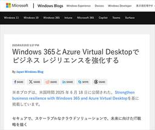

Publickey
https://www.publickey1.jp/
Enterprise ITに軸足を置き、新たにIT業界を変えつつあるクラウドコンピューティングやHTML5など最新の話題を、ブロガー独自の分析を交え、充実した記事で紹介するブログです。毎日更新しています。
フィード

Visual Studio CodeのAIエディタ化が前進、GitHub Copilot Chatがオープンソースで公開。現在プレリリース版 45
45
Publickey
Visual Studio Codeの拡張機能「GitHub Copilot Chat」のソースコードがMITライセンスで公開されました。 公開されたソースコードはまだバージョン0.29のプレリリース版と位置づけられています。 オープンソー...
12時間前

Android StudioでGeminiのエージェントモードが利用可能に。「ダークモードを追加して」などの指示でAIが自律コーディング 14
Publickey
GoogleはAndroidの統合開発環境である「Android Studio」の最新版に、生成AIのGeminiが自然言語の指示に応じて自律的にコーディングを行う「エージェントモード」を追加することを明らかにしました。 Agentic A...
5日前

AWS、Google、マイクロソフトらがAIエージェント連携のため「Agent2Agentプロジェクト」設立。Linux Foundation傘下で 175
Publickey
異なるベンダが提供する複数のAIエージェント間でのコミュニケーションやコラボレーションを実現するオープンスタンダード確立のための「Agent2Agentプロジェクト」（A2Aプロジェックト）設立を、Linux Foundationが発表しま...
6日前

Cloudflareが重大なサービス障害の原因を説明。実はWorkers KVがGoogle Cloudに依存しており、Google Cloudの障害が原因だったと 87
Publickey
日本時間6月13日午前2時52分から約2時間半、CloudflareはキーバリューストアのWorkers KVやCloudflareダッシュボードの一部を含む同社の重要なサービスに影響を与える重大なサービス障害を起こしています。 Cloud...
7日前

マイクロソフト、PCの紛失や故障などのとき一時的に同構成のクラウドPCが使える「Windows 365 Reserve」プレビュー公開 87
Publickey
マイクロソフトは、紛失や故障などによってPCが突然使えなくなったときに、一時的にあらかじめ同じ構成に設定されたクラウドPCを利用可能にすることでPCでの仕事が続けられる新サービス「Windows 365 Reserve」のプレビュー公開を発...
8日前

CVE Foundationが取締役会と今後の計画を明らかに。安定性のために複数の収入源による財務基盤を確立など
Publickey
4月に設立された「CVE Foundation」は、ソフトウェアの脆弱性に対して固有の番号を付与する「CVE」（Common Vulnerabilities and Exposures）プログラムを実行するための非営利団体です。 CVE F...
12日前
アトラシアン、Claude Codeライクな開発支援AIエージェント「Rovo Dev」をベータ公開。ベータ期間中は無料
Publickey
アトラシアンはソフトウェア開発支援AIエージェントの「Rovo Dev」をベータ公開しました。 Rovo Devは、ターミナル環境を活用する開発者向けに設計されたCLIツールです。ターミナル環境での開発支援AIエージェントとしてはAnthr...
13日前
クラウドインフラのシェア、Canalysの調査ではAWSがシェア30％台を維持、Azureは23％と急増。Canalysによる2024年第4四半期の調査結果
Publickey
調査会社のCanalysは、2025年第1四半期におけるグローバルなクラウドインフラ市場に関する調査結果を発表しました。 同社はIaaSとベアメタル、プラットフォームサービスを総合してクラウドインフラ市場としています。 クラウドインフラのシ...
13日前
日本初開催の「KubeCon+CloudNativeCon Japan 2025」が開幕。1500枚のチケットはソールドアウト
Publickey
クラウドネイティブ技術における業界最大のイベント「KubeCon+CloudNativeCon Japan 2005」が昨日（6月16日）、都内のホテルで開幕しました。今日（6月17日）までの2日間開催されます。 「KubeCon＋Clou...
14日前
Google Cloud、世界中のリージョンが影響を受けた大規模障害、原因は管理システムがヌルポインタ参照でクラッシュしたこと
Publickey
Google Cloudは日本時間で6月13日金曜日の午前2時49分から約3時間のあいだ、Google Cloudの世界中のリージョンにおいてAPIへのアクセスに対して503エラーの発生が増加するなどの障害を起こしていました。 この影響でS...
15日前
イーサネットをさらに高速にする「Ultra Ethernet Consotium Specification v1.0」が正式公開。トランスポート層にRDMAを実装
Publickey
Linux Foundation傘下のUltra Ethernetコンソーシアムは、イーサネットをさらに高速化する新仕様「Ultra Ethernet Consotium Specification v1.0」（UEC v1.0）を正式公開...
15日前
Webブラウザで実行可能なWebAssemblyベースのJavaVM「CheerpJ 4.1」がJava 17をプレビューサポート
Publickey
Leaning Technologiesは、Webブラウザで実行可能なJavaVMのWebAssembly実装の最新版「CheerpJ 4.1」をリリースしました。 CheerpJは1つ前のCheerpJ 4.0でJava 11をサポートす...
19日前
全世界のソフトウェア開発者は4700万人。最も多いのがJavaScript開発者で2800万人、Java、Pythonが続く。スラッシュデータの調査
Publickey
IT業界に関する調査を行っているSlash Dataは、全世界のソフトウェア開発者に関する調査結果を発表しました。 発表によると、全世界のソフトウェア開発者は合計で約4700万人。そのうち最も多く使われているプログラミング言語がJavaSc...
20日前
プログラマのために作られたローコード／ノーコード開発基盤「iPLAss」、Java/Groovyでカスタムロジックも可能。オープンソースで公開［PR］
Publickey
一般にローコード／ノーコード開発ツールは、シチズンデベロッパーと呼ばれる非プログラマが自分たちのためのアプリケーションを手軽に開発できる、という文脈で注目されがちです。 しかし本記事で紹介するiPLAssは、プロフェッショナルであるプログラ...
21日前
生成AI開発ツールを用いる賞金総額約1億5000万円のハッカソン「World's Largest Hackathon」開催中
Publickey
生成AIを用いてフルスタックアプリケーションを開発するツール「Bolt.new」によるアプリケーション開発を競うハッカソン「World's Largest Hackathon」が開催中です（詳しい説明）。 賞金総額は100万ドル超（1ドル1...
21日前